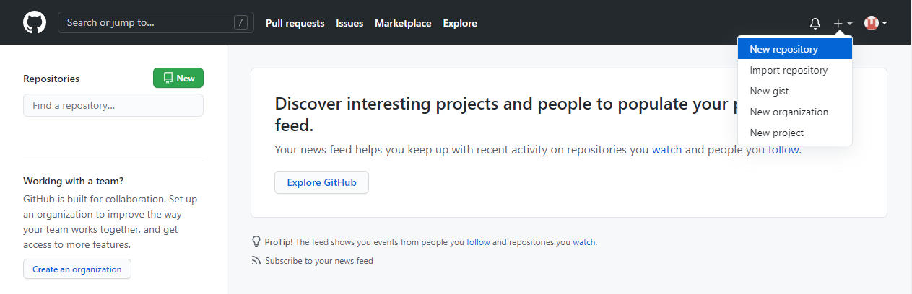
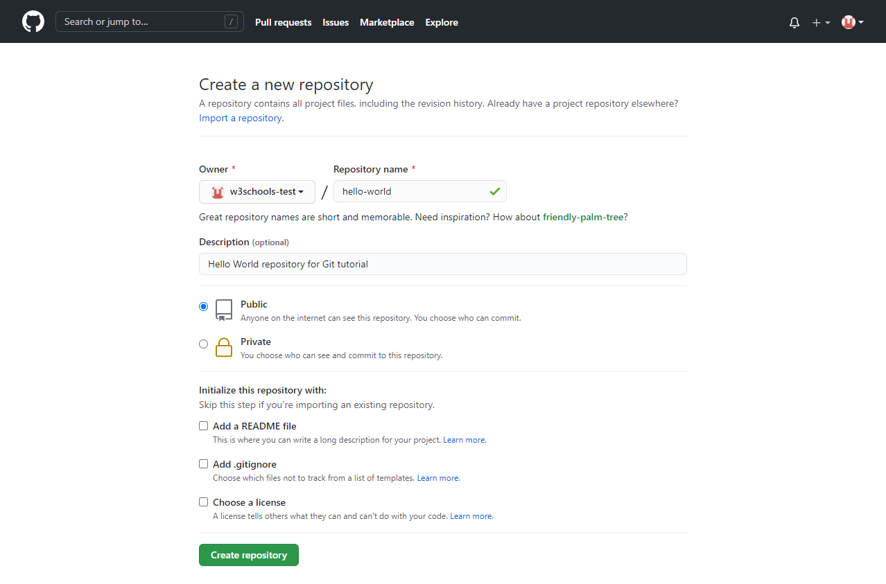
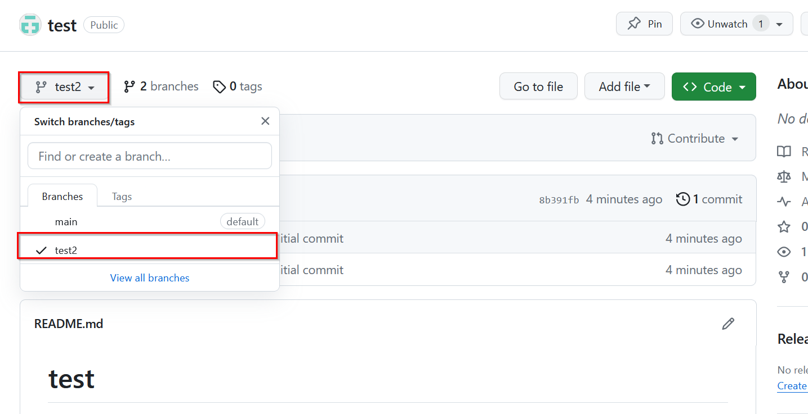
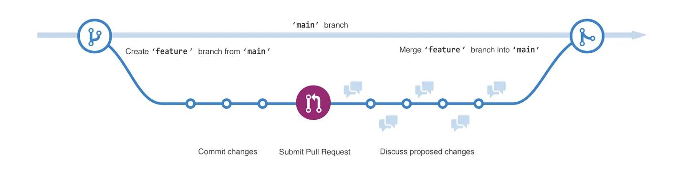

Tutorial 8 - Git and Version Control


- 8.1 Overview
- 8.2 Working with GitHub
- 8.3 Working with a Local Git Repository
- 8.4 Using Git in VS Code
- References
8.1 Overview
Version control is the practice of tracking and managing changes to files over time. A version control system records every change made to a project, who made it, and why, which makes it possible to review the history of a project, recover earlier versions of files, and collaborate with other people on the same code without overwriting each other’s work. Version control is an essential tool in Data Science projects, where code, configuration files, and documentation evolve continuously and are often shared among several team members.
8.1.1 Git
Git is a distributed version control system (VCS) that allows developers to track changes in their code over time. It was created by Linus Torvalds in 2005 and is by far the most widely used version control system for managing source code. Git enables multiple developers to work on a project simultaneously and independently, and it tracks the changes made by each contributor. It provides features such as branching, merging, and history tracking.
With Git, each developer has a local copy of the entire project history. Developers can work offline, commit changes locally, and then synchronize with a central repository later.
Key features of Git include:
- Manage projects with repositories.
- Clone a project to work on a local copy.
- Control and track changes with staging and committing.
- Branch and merge for working on different parts and versions of a project.
- Push local updates to the main project.
A repository (or repo) is typically used to organize a single project. Repositories can contain folders and files, images, videos, spreadsheets, and datasets. Repositories typically include a README file that provides information about the project. README files are written in plain-text Markdown language.
8.1.2 GitHub
GitHub is a web-based platform that provides hosting for Git repositories. It offers a graphical interface for managing Git repositories, collaboration features, and additional tools for project management. GitHub is owned by Microsoft, and it hosts the majority of open-source software projects, including most of the Python libraries used in this course.
Key features of GitHub are:
- Repository hosting: GitHub provides a place to store and manage Git repositories.
- Collaboration: Developers can collaborate on projects by forking repositories, making changes, and submitting pull requests.
- Issue tracking: GitHub includes an issue-tracking system for managing bugs, feature requests, and other tasks.
- Pull requests: Developers can propose changes to a project by submitting pull requests, which can be reviewed and merged by project maintainers.
- Automation and hosting: GitHub Actions can automatically run tests or build and publish a project (the website of this course is published with GitHub Actions and GitHub Pages).
- Web-based interface: GitHub provides a user-friendly web interface for interacting with Git repositories.
To summarize, Git is the version control system that tracks changes to code on your computer, whereas GitHub is a web-based platform that hosts Git repositories and adds collaboration tools on top of Git. Alternatives to GitHub that work in the same way include GitLab and Bitbucket.
8.2 Working with GitHub
In this section we will create a repository, make changes to it, and work with branches and pull requests entirely through the GitHub website. The same workflow is afterward repeated from the command line in Section 8.3.
Sign up for a GitHub account using the following link. Students can also apply for the GitHub Student Developer Pack, which provides free access to GitHub Pro and other developer tools.
8.2.1 Creating a Repository
To create a new repository on GitHub, click the “+” button in the upper right corner and select “New repository”, as shown below. Then, fill in the relevant details: the repository name (e.g., hello-world), an optional description, and whether the repository is Public (visible to anyone) or Private (visible only to you and the collaborators you invite). You also have options to add a README file, a .gitignore file, or a license for your repository. It is recommended to check “Add a README file”, so that the repository is not empty. Click the “Create repository” button to finish the creation process.


8.2.2 Making and Committing Changes
We can make and save changes to the files in a GitHub repository via commits. Each commit has an associated commit message, which is a description explaining why a particular change was made. Commit messages capture the history of the changes, so that other contributors can understand what you have done and why.
For instance, to edit the README.md file, we can follow these steps:
- Click on the
README.mdfile, and then click the “Edit file” (pencil) button located in the upper right corner. - In the editor, write some text to describe the repository.
- Click “Commit changes…”.
- In the “Commit message” field, write a short message title and, optionally, an extended description of the changes.
- Click “Commit changes”.
The commit is now part of the history of the repository. Clicking on the “commits” link (the clock icon above the file list) shows the full list of commits, and clicking on any commit shows exactly which lines were added or removed.
8.2.3 Creating a Branch
By default, a repository comes with a primary branch called main, which serves as the authoritative version of the project. We have the option to establish additional branches stemming from the main branch. Branches allow several versions of a project to exist simultaneously. This is beneficial when incorporating new features into a project without altering the primary source code. Changes made in a branch remain isolated from the main branch until they are merged. Branches therefore provide a space for experimentation and editing before finalizing the changes and committing them to the main branch.
When branching off the main branch, we essentially create a snapshot of the main branch as it existed at that specific moment. If someone else modifies the main branch while you are developing your branch, you have the option to incorporate those updates into your branch.
To create a new branch:
- Click the dropdown menu beside the
mainbranch name. - Type a descriptive name in the field “Find or create a branch…” shown below, for example
test2. - Click on “Create branch test2 from main”.
Now there are two branches, main and test2, that are exactly the same. Any changes committed while test2 is selected go to that branch only.

8.2.4 Opening a Pull Request
An example of a flow diagram for making changes in a branch is depicted in the next figure, showing the main branch, a new branch called feature, and the path of the feature branch before it is merged back into the main branch.

Pull requests are the main form of collaboration on GitHub. When you open a pull request, you are proposing your changes to the repository, and requesting that someone review your contribution and pull it into their branch.
You can open a pull request and start a discussion as soon as you make changes to your branch, even before the code is finished. By using GitHub’s @mention feature in the pull request message, you can ask for feedback from specific people or teams.
Pull requests show the differences (diffs) in the content between the two branches. Additions and deletions are shown in green and red.
Let’s make a change in the test2 branch (e.g., edit the README.md file again, making sure that test2 is the selected branch), and then create a pull request:
- Click the “Pull requests” tab in the top menu of the repository.
- Click on the “New pull request” button.
- In the “Compare changes” box, select the base branch
mainand compare it with thetest2branch. - Look over your changes in the diffs on the “Comparing changes” page, and make sure they are what you want to submit.
- Click “Create pull request”.
- Give your pull request a title and write a brief description of your changes. Optionally, use the panel on the right to add Reviewers, Assignees, Labels, Projects, or a Milestone. These options provide additional ways to organize and collaborate on pull requests.
- Click “Create pull request”.
8.2.5 Merging a Pull Request
When you merge your pull request, the changes on your branch are incorporated into main. Sometimes, a pull request may introduce changes that conflict with changes made on the main branch in the meantime (e.g., the same line of a file was edited in both branches). If there are any merge conflicts, GitHub will alert you about the conflicting code and prevent merging until the conflicts are resolved. You can make a commit that resolves the conflicts, or use comments in the pull request to discuss the conflicts with your team members.
To merge your branch into the main branch:
- At the bottom of the pull request, click “Merge pull request” to merge the changes into
main. - Click “Confirm merge”. You will receive a message that the request was successfully merged and the pull request was closed.
Now that your pull request is merged and your changes are on main, you can safely delete the branch with the edits by clicking on the “Delete branch” button in the merge message.
If you need to make further changes, simply create a new branch and repeat the same workflow. This cycle of branch, commit, pull request, review, and merge is known as the GitHub flow.
8.3 Working with a Local Git Repository
This section explains how to use Git from the command line interface (CLI) to download a GitHub repository to our computer, make local changes, and then upload those changes back to GitHub. Working locally is the normal way of using Git, since the code is edited and run on our computer, and GitHub serves as the shared remote copy of the repository.
Four main locations are involved when working with Git:
- The working directory, which contains the files that we edit.
- The staging area (or index), where we collect the changes that will go into the next commit.
- The local repository (the hidden
.gitfolder), which stores the complete history of commits. - The remote repository on GitHub, which is synchronized with the local repository via
pushandpull.
8.3.1 Installing and Configuring Git
Download and install Git from https://git-scm.com/downloads. On macOS, Git can also be installed with the Xcode Command Line Tools, and on Linux it is available from the package manager (e.g.,
sudo apt install git).After installation, open Command Prompt, Terminal, or Git Bash. On Windows, the preferred shell is Git Bash, which comes installed with Git for Windows. It is a Unix-style shell that emulates a Linux terminal (see Tutorial 3). Verify the installation with:
git --version- Configure your Git identity by providing your name and the email address associated with your GitHub account. This is done only once when you begin using Git. The name and email are recorded in every commit that you make.
git config --global user.name "Your Name"
git config --global user.email "youremailaddress@example.com"Verify your settings.
git config --list- When you push to GitHub for the first time, Git will ask you to sign in. On Windows and macOS, the Git Credential Manager opens a browser window to authenticate with your GitHub account and stores the credentials, so that you do not need to sign in again. Alternatively, the GitHub CLI command
gh auth loginsets up the authentication.
8.3.2 Cloning, Committing, and Pushing
- Clone an existing repository from GitHub. Go to the repository’s GitHub page (e.g., the
hello-worldrepository that we created above), click the green “Code” button, and copy the HTTPS URL (e.g.,https://github.com/username/hello-world.git). Run the following command in Git Bash to download the repository into a new folder in the current directory.
git clone https://github.com/username/hello-world.gitThen move into the project folder.
cd hello-worldMake local changes to the files. For instance, we can edit the
README.mdfile using VS Code and save the file, or add a new Python file to the folder.Check the repository status to see which files have been modified or added. Git lists the changed files that are not yet staged in red.
git status- Stage (prepare) the changes for commit. The
.(dot) adds all changed files in the current directory and its subfolders; individual files can be staged withgit add filename. Runninggit statusagain shows the staged files in green.
git add .- Commit the staged changes to the local repository, and include a descriptive message.
git commit -m "Update the README file"The commit history can be displayed with git log, or in a compact form with git log --oneline.
- Pull the latest changes from GitHub (recommended before pushing), to make sure your local repository is up to date in case the remote repository was changed by someone else, or by you via the web interface. By default, Git assigns the name
originto the remote repository that the project was cloned from, andmainis the name of the branch.
git pull origin main- Push your changes to GitHub. This command uploads your local commits to the remote repository.
git push origin main- Verify your changes at the repository page on GitHub. Your updates should now appear online.
The daily workflow with Git therefore consists of repeating the steps: edit files, git add, git commit, git pull, and git push.
If you want to start a new project locally instead of cloning an existing one, run git init inside the project folder to turn it into a Git repository, create an empty repository on GitHub, and connect the two with git remote add origin <URL> before the first push.
8.3.3 Working with a New Branch
The following commands provide a similar example where the changes are made in a separate branch, which is afterward merged into the main branch.
- Create a new branch called
test3and switch to it. (The older but still common commandgit checkout -b test3does the same.)
git switch -c test3The command git branch lists all local branches and marks the current one with an asterisk.
- Make changes to the local files (e.g., using VS Code or a Python editor). Afterward, stage and commit the changes.
git add .
git commit -m "Add changes in branch test3"- Push the new local branch
test3to the remote repository on GitHub. The-uoption links the local branch with the remote branch, so that later you can simply rungit pushandgit pullwithout arguments.
git push -u origin test3After pushing, if you open the repository on GitHub, you will see the new branch test3 listed and available to the other collaborators on the project.
- Merge the new branch
test3into themainbranch.
First, switch back to the main branch.
git switch mainThen merge and push the changes.
git merge test3
git pushAlternatively, and preferably when working in a team, you can open a pull request on GitHub to merge the new branch test3 into main, as described in Section 8.2.4. After the branch is merged, it can be deleted locally with git branch -d test3.
8.3.4 Ignoring Files
Not every file in a project folder should be tracked by Git. Typical examples are large datasets, trained model weights, virtual environment folders, Jupyter checkpoint folders, and files containing passwords or API keys. A text file named .gitignore in the root of the repository lists the files and folders that Git should ignore, one pattern per line, for example:
# Python
__pycache__/
*.pyc
.ipynb_checkpoints/
# Virtual environments
venv/
.env
# Data and models
data/*.csv
*.h5
*.ptGitHub offers a ready-made .gitignore template for Python when a repository is created, and it is a good practice to include one in every project. Note that GitHub does not accept files larger than 100 MB, so large datasets should be stored outside the repository (e.g., in cloud storage) and ignored by Git.
8.4 Using Git in VS Code
All of the Git commands above are also available through the graphical interface of VS Code (see Tutorial 2), which uses the Git installation on your computer. When a folder that is a Git repository is opened in VS Code:
- The Source Control view (the branching icon in the left Activity Bar, or
Ctrl+Shift+G) lists the modified files. Clicking a file shows the diff of the changes side by side with the previous version. - Clicking the “+” next to a file stages it (
git add), and the message box at the top with the “Commit” button creates a commit (git commit -m). - The “Sync Changes” button pulls and pushes the commits to GitHub (
git pullfollowed bygit push). - The branch name shown in the bottom-left corner of the status bar opens a menu for switching branches or creating a new branch (
git switch). - Modified lines are marked with colored bars in the editor gutter, and the file names in the Explorer are colored to indicate whether they are modified (
M), untracked (U), or ignored.
The GitHub Pull Requests extension for VS Code additionally allows creating and reviewing pull requests without leaving the editor. Using the graphical interface is convenient for everyday work, but understanding the underlying commands from Section 8.3 is important for resolving the situations that the interface does not handle, such as merge conflicts.
References
- Hello World. GitHub Docs. https://docs.github.com/en/get-started/start-your-journey/hello-world
- Pro Git book, by Scott Chacon and Ben Straub. https://git-scm.com/book/en/v2
- H. F. Campion. An intro to Git and GitHub for beginners (tutorial). HubSpot Careers. https://product.hubspot.com/blog/git-and-github-tutorial-for-beginners
- Git tutorial. W3Schools. https://www.w3schools.com/git/
- Using Git source control in VS Code. Visual Studio Code Docs. https://code.visualstudio.com/docs/sourcecontrol/overview